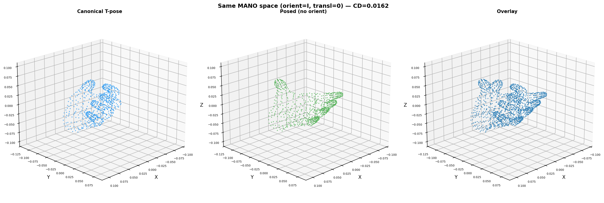
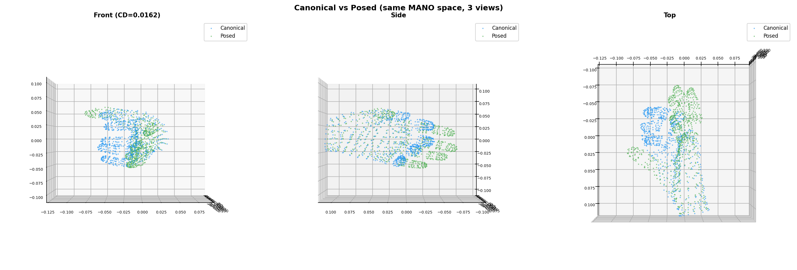
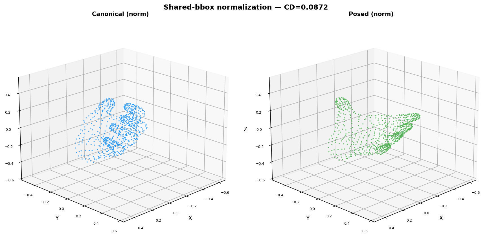

Goal: Visualize canonical and posed (no orient) meshes in the same MANO output coordinate frame. Both have orient=identity, transl=0 — the only difference is finger articulation (pose) and hand proportions (shape).
| Mesh | X range | Y range | Z range | Centroid |
|---|---|---|---|---|
| Canonical | [−0.040, 0.114] | [−0.062, 0.035] | [−0.052, 0.057] | (0.010, −0.024, 0.001) |
| Posed (no orient) | [−0.071, 0.111] | [−0.079, 0.032] | [−0.055, 0.059] | (0.002, −0.008, −0.004) |
Chamfer distance (MANO space): 0.0162 — this is the true deformation distance the pipeline needs to learn.

Left: canonical T-pose (blue). Middle: posed with GT finger articulation (green). Right: overlay. Both in the same MANO output space (orient=I, transl=0). The meshes overlap significantly — only finger positions differ.

Front, side, and top views of canonical (blue) and posed (green) overlaid. The palm is nearly identical; fingers diverge. CD=0.0162 in MANO space.

Both meshes normalized to [−0.5, 0.5] using a shared bounding box (union of both meshes). This is the correct normalization for the chamfer loss — both in the same unit cube. CD=0.087 in this normalized space.
canonical_c = canonical - canonical.mean(0) and posed_c = posed - posed.mean(0). Since the centroids differ by ~0.02m, this introduced a systematic shift between the two meshes, making them appear more different than they are and polluting the chamfer loss. The correct approach: keep both in MANO output space (or normalize with a shared bbox).
For the chamfer loss in normalized space, both pred and GT must be normalized using the same reference bbox:
| Method | CD | Correctness |
|---|---|---|
| Separate centroid centering (old, buggy) | varies | Wrong — shifts meshes apart |
| Shared MANO space (no normalization) | 0.0162 | Correct but not normalized |
| Shared-bbox normalization | 0.0872 | Correct — use this for training |